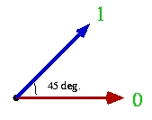
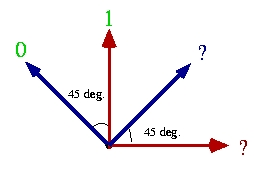

The B92 quantum coding scheme is similar to the BB84 coding scheme but used only 2 out of the 4 BB84 states. It encodes classical bits in two non-orthogonal BB84 states. Since no measurement can disinguish two non-orthogonal quantum states, it is impossible to identify the bit with certainty. Moreover, any attempt to learn the bit will modify the state in a noticeable way. This is the basic idea behind the quantum key distribution protocol B92 (see Bennett in Journal for XXXX, vol. w no. W). By contrast to the BB84 case, the B92 coding scheme allows the receiver to learn whenever he gets the bit sent without further discussion with Alice. Since it uses only 2 quantum states, the B92 coding scheme is sometimes easier to implement. However, the security it provides is more difficult to establish in certain experimental settings and very often turns out to be totally insecure.
The B92 coding scheme, unlike the BB84 scheme, uses a one-to-one correspondance between classical bits and quantum states. In order to send bit b, Alice prepares a photon in the following quantum state:

These two states correspond to the BB84 |0> and |0> respectievely. On the receiving end, a measurement in a random BB84 basis (i.e. the "+" or the "x" basis) is performed. According to the the outcome, the received bit b' is set to be:

Encodeing classical information over the quantum channel is usually implemented by the transmission of photons in some polarization states. The direction of the polarization encodes a classical bit. In the B92 coding scheme, the classical bit b=0 is encoded by a photon with horizontal polarization and the classical bit b=1 is encoded by a photon with polarization angle 45degrees.
According to quantum mechanics, it is impossible to distinguish with certainty two non-orthogonal quantum states. Moreover, the more one tries to distinguish the two states, the more the states get disturbed. Follow this link for more information about quantum measurements.
As for the BB84 coding scheme, we define the following measurements that are going to be executed by the legitimate receiver of B94 qubits:
Alice's input : n
(the
length of the resulting transmission)
Bob's input
: n
Alice's output: b
(the
bits transmitted)
Bob's output
: b'(the bits obtained or ?)